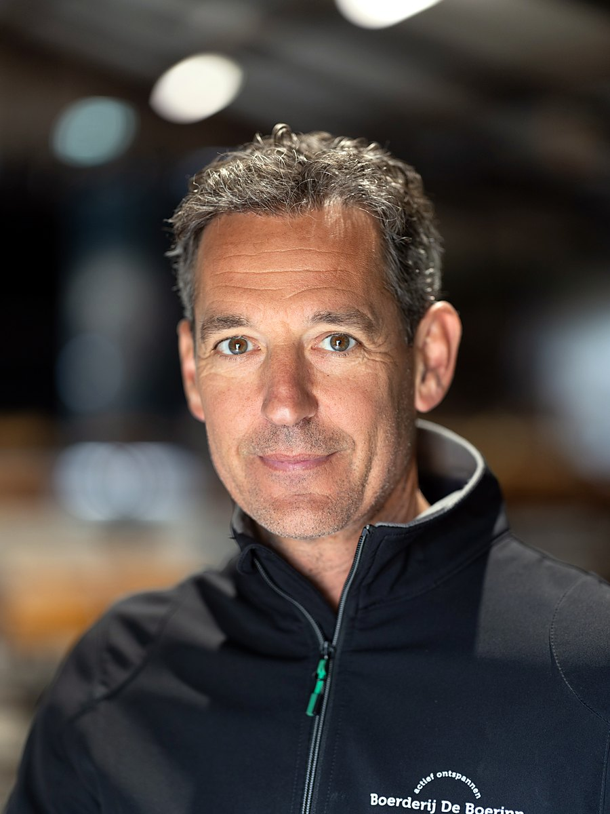

Case study · Dairy & livestock farms
De Boerinn farm
Heats several buildings on the site and saves € 22,000 in heating costs per year.
The farm manure, mixed with its own pruning waste, goes into the system each year. That covers 95% of the heat demand of the whole site.

The result
What the system delivers here
The manure no longer has to be taken away. Mixed with some pruning waste it goes into the system each year and delivers the heat for the buildings on the site. That covers 95% of the heat demand and saves roughly € 22,000 in heating costs per year.
What is left over is 30 tonnes of compost per year. It goes onto the farm land, where a plot is being restored over two years for a food forest. Compost counteracts soil subsidence and adds soil life and nutrients, so that this land becomes usable again.
- 95% of the heat demand of the whole site covered
- Own manure, mixed with own pruning waste, as fuel
- 30 tonnes of compost per year for the farm land